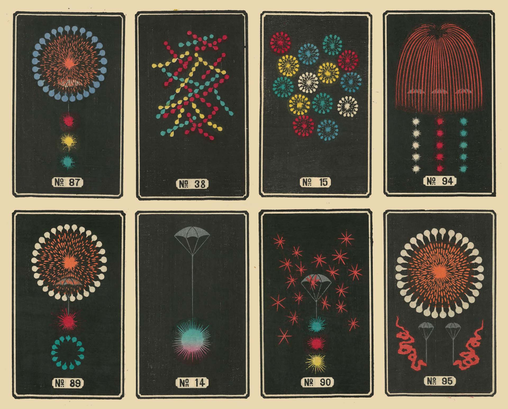

Eindopdracht
In het vak CSS to the Rescue gaat het over het experiment. We willen dus dingen zien die we nog nooit hebben gezien. We willen dingen zien waarvan we niet wisten dat we ze konden maken met CSS. Dat betekent, uiteraard, dat je zelf gaat experimenteren, en dus niet code gaat kopiëren. Het is een experimenteel vak, en je mag met experimentele CSS features aan de slag die het nog niet in alle browsers doen. Browserverschillen doen er in dit vak niet toe.
Het gaat er uiteindelijk niet alleen om hoe het er uitziet, het gaat er ook om hoe het werkt. Er zijn heel veel manieren om interactie vorm te geven met CSS, die willen we zien. Je maakt dus uiteindelijk geen plaatje, maar een interactief experiment.
Vier opdrachten om uit te kiezen:
- Modulair bedieningspaneel
- Interactieve vuurwerkshow
- Maak een 3D Rubrik's kubus
- Tailwind zonder Tailwind, met moderne CSS
De beoordelingscriteria voor de eindopdracht op een rijte. De eindopdracht presentatie staat in Teams (bij Files) - mag niet hier vanwege auteursrechten.
1. Modulair bedieningspaneel
Formulieren zijn al sinds de oerknal van het web een essentiële schakel voor interactie. Ze waren (te) lang notoir lastig om te stijlen :-( Maar nu niet meer :-) Aan jou de opdracht om van allemaal verschillende formulier-elementen een modulaire visuele synthesizer te maken.
meer
Het startpunt
De site control--panel.com is een verzamelplaats voor bedieningspanelen. Kies zelf een bedieningspaneel uit de verzameling uit. Kies er natuurlijk een die jij zelf tof en uitdagend vindt. En maak van dat bedieningspaneel dan een zo stijlvast mogelijke webby variant (en ja, dat mag inclusief de kast).
Interactie
Voor goede interactie is het o.a. belangrijk dat:
- gebruikers kunnen 'zien' dat/hoe iets te bedienen is (affordance),
- dat de gebruiker feedback krijgt als iets bediend wordt en
- dat de status van de bedieningselementen altijd duidelijk is.
Besteedt daar aandacht aan.
'Iets' bedienen
Zorg dat het bedieningspaneel werkt → 'iets' bedient. Bij sommige bedieningspanelen uit de verzameling is dat 'iets' al onderdeel van het bedieningspaneel. In de andere gevallen mag je dat 'iets' zelf bedenken.
Modulair
Modulair betekent dat je altijd een extra module toe kunt voegen. Dat betekent ook dat deze opdracht nooit af is.
Scriptje toegestaan
Checkboxes en radiobuttons die aan of uit staan kun je prima gebruiken om styling aan te passen met alleen CSS. Helaas geldt dat niet voor ranges (sliders). Omdat ranges (sliders) wel tof zijn en in veel bedieningspanelen aanwezig zijn, mag je daarvoor dit range scriptje gebruiken. Dat is meteen het enige JavaScript wat je in dit vak mag gebruiken.
Lokale favorieten
De Selector First CSS & No JS aanpak
-
Het eerste uitgangspunt is dat je geen ID's en classes gebruikt. Niet omdat ze niet nuttig zijn, maar om te oefenen met de vele CSS selectoren die je tot je beschikking hebt. ID's mag je alleen gebruiken om de :target selector te triggeren en uiteraard om labels te koppelen aan inputs. En als het echt echt echt niet anders kan, heb je permissie om een enkele class toe te voegen.
-
Een tweede uitgangspunt is dat je geen JavaScript gebruikt. Als iets niet kan met CSS, dan zal je iets anders moeten verzinnen om te maken. We onderzoeken de mogelijkheden van CSS in dit vak, en niet die van JS.
2. Interactieve vuurwerkshow
"Anyone who has ever held their camera up to the blazing sky knows that a brilliant firework show can rarely be captured to any satisfying degree." Aan jou de vraag om een onvergetelijke magische dynamische CSS vuurwerkshow te creëren. Normaal vuurwerk ziet er uit zoals het er uitziet omdat het met buskruit wordt gemaakt. Hoe ziet vuurwerk er uit dat met CSS wordt gemaakt?
meer
Slechts drie eisen
- Creëer een dynamische CSS-only vuurwerkshow.
- De gebruiker kan de show beïnvloeden.
nb. Je moet het vuurwerk zelf maken.
Nota benes
- Bonus: als je vuurwerkshow 3D is en/of als je rekening houdt met prefers-reduced-motion:reduce.
- Bonus: als de wijze van de show beïnvloeden passend is - bijv. de show starten als prefers-color-scheme:dark wordt gekozen.
- De afbeeldingen uit deze Japanse vuurwerkcatalogus (uit ca. 1880) zijn wellicht een inspiratie om een stijlrichting te vinden. Je mag de verschijningsvorm van vuurwerk natuurijk ruim interpreteren. 
De Selector First CSS & No JS aanpak
-
Het eerste uitgangspunt is dat je geen ID's en classes gebruikt. Niet omdat ze niet nuttig zijn, maar om te oefenen met de vele CSS selectoren die je tot je beschikking hebt. ID's mag je alleen gebruiken om de :target selector te triggeren en uiteraard om labels te koppelen aan inputs. En als het echt echt echt niet anders kan, heb je permissie om een enkele class toe te voegen.
-
Een tweede uitgangspunt is dat je geen JavaScript gebruikt. Als iets niet kan met CSS, dan zal je iets anders moeten verzinnen om te maken. We onderzoeken de mogelijkheden van CSS in dit vak, en niet die van JS.
3. Maak een 3D Rubrik's kubus
Ernő Rubik bedacht in 1974 de puzzel die de mensheid sindsdien boeit - de kubus. Aan jou de opdracht om een digitale 3D versie van de kubus te maken. Net als de kubus zelf een analytische en wiskundige breinbreker.
meer
Slechts één eis
Je kan de wiskundige problemen die Sanne je geeft oplossen.
Mogelijke features
Je startpunt is het maken van een kubus in 3D. Daarna kun je o.a. aan de volgende features denken:
- De kubus animeren als instructie hoe een kubus is op te lossen.
- De mogelijkheid om het thema van de kubus te veranderen.
- De kubus is te bedienen (hij werkt).
- De mogelijkheid om het aantal blokjes van de kubus aan te passen (bijv. 2x2x2, 4x4x4 ... 13x13x13 of de ultieme uitdaging een kubus met ongelijke zijden bijv 2x2x4).

De Selector First CSS & No JS aanpak
-
Het eerste uitgangspunt is dat je geen ID's en classes gebruikt. Niet omdat ze niet nuttig zijn, maar om te oefenen met de vele CSS selectoren die je tot je beschikking hebt. ID's mag je alleen gebruiken om de :target selector te triggeren en uiteraard om labels te koppelen aan inputs. En als het echt echt echt niet anders kan, heb je permissie om een enkele class toe te voegen.
-
Een tweede uitgangspunt is dat je geen JavaScript gebruikt. Als iets niet kan met CSS, dan zal je iets anders moeten verzinnen om te maken. We onderzoeken de mogelijkheden van CSS in dit vak, en niet die van JS.
4. Tailwind zonder Tailwind, met moderne CSS
Tailwind is een veel gebruikte tool, en er zijn developers die er blij van worden. Voor deze developers is deze opdracht (als je wil natuurlijk! Je mag ook een van de andere kiezen). Je gaat jouw laatste Tailwind project ombouwen naar een architectuur die gebruik maakt van de kracht van moderne en aankomende CSS.
meer
Eisen
- Het gaat om een Tailwind project waar je zelf aan hebt gewerkt
- Je maakt gebruik van de cascade
- Je maakt gebruik van inheritance
- Je maakt gebruik van @layer
Mogelijke aanpak
Kijk eens naar ideeën over het opzetten van een complexe CSS structuur.
De Selector First CSS & No JS aanpak
-
Het eerste uitgangspunt is dat je zo min mogelijk ID's en classes gebruikt. Niet omdat ze niet nuttig zijn, maar om te oefenen met de vele CSS selectoren die je tot je beschikking hebt. ID's mag je alleen gebruiken om de :target selector te triggeren en uiteraard om labels te koppelen aan inputs. En als het echt echt echt niet anders kan, heb je permissie om een enkele class toe te voegen.
-
Een tweede uitgangspunt is dat je geen JavaScript gebruikt. Als iets niet kan met CSS, dan zal je iets anders moeten verzinnen om te maken. We onderzoeken de mogelijkheden van CSS in dit vak, en niet die van JS.
Opleveren & Eindgesprek
Dit opleveren:
- De website
- Een 'procesverslag'
meer
Je werkt het hele vak aan de eindopdracht. Geen tussenopdrachten. Ondertussen wel je proces bespreken en vastleggen:
- Deadline: de dag voor het eindgesprek voor 18:00 uur.
- De gesprekken zijn verdeeld over twee weken. Je schrijft jezelf in voor een slot (en bepaalt daarmee je deadline).
- Je levert je werk en procesverslag in op GitHub én in een zip op DLO.
- Tijdens het gesprek laat je je website zien, vertel je waar je blij mee bent, wat lastig is/was en stelt de docent vragen over je code.
Herkansing - idem (indien nodig).
Procesverslag (README.md)
Als voorbereiding op het gesprek elke vrijdag vul je je README.md aan en zet die samen met je werk op GitHub. Aan het eind van het vak heb je dan gelijk je procesverslag.
meer
Week 1 - Je plan
- Welke opdracht ga je doen en voor welke opties kies je qua uitwerking.
- Met welke CSS-technieken ga je als eerste aan de slag.
- Waar liggen je (grootste) uitdagingen.
- Neem schets(en) van je ontwerp op.
- Maak wellicht ook al een eerste breakdown-schets.
Week 2 & 3 - Voortgang
- Laat je voortgang zien ('praatje met plaatjes').
- Wat ging er soepel en wat was lastig.
- Welke experimenten heb je gedaan die die 'mislukt' zijn.
- Heb je nieuwe inzichten hoe je de kracht CSS kunt benutten (of juist niet).
- Neem wijzigingen aan je 1e plan op.
- Waar liggen je (nieuwe) uitdagingen voor komende week.
Week 4 - Afronding
- Bespreek je eindresultaat. ('praatje met plaatjes').
- Wat ging er soepel , wat was lastig en waar ben je trots op.
- Welke experimenten heb je gedaan die die 'mislukt' zijn.
- Heb je nieuwe inzichten hoe je de kracht CSS kunt benutten (of juist niet).
- Waar wil je meer mee gaan doen.
Planning & begeleiding
De planning vind je in de 'Indeling en Planning' Excel bij de files in het CSSttR channel in Teams. De docenten lopen af en toe langs zijn buiten de contactmomenten in sluimerstand aanwezig. Geef een seintje als je een vraag hebt - of trots je werk wilt laten zien.